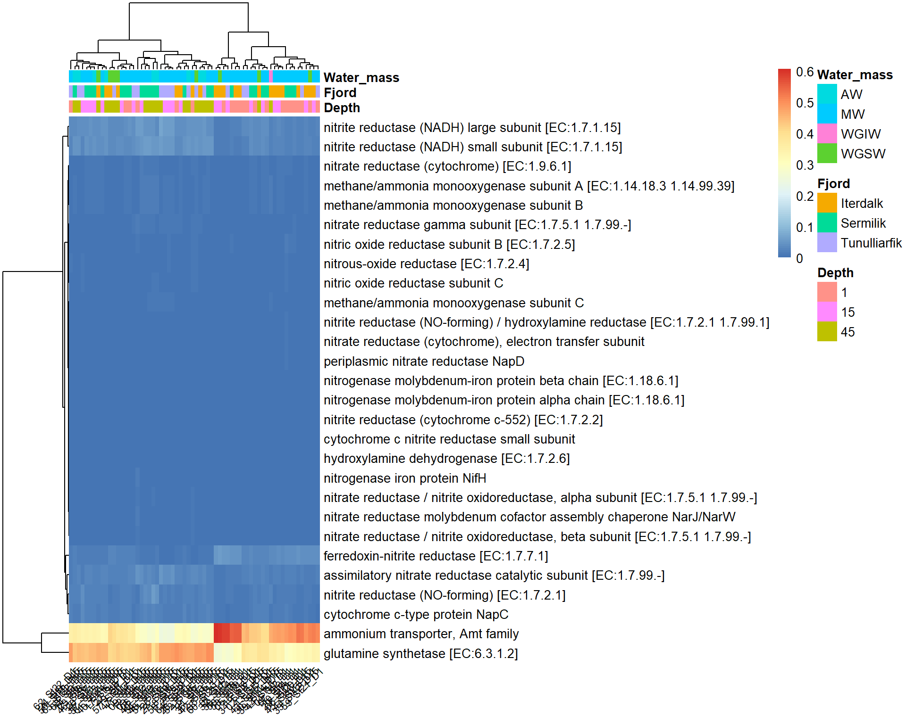
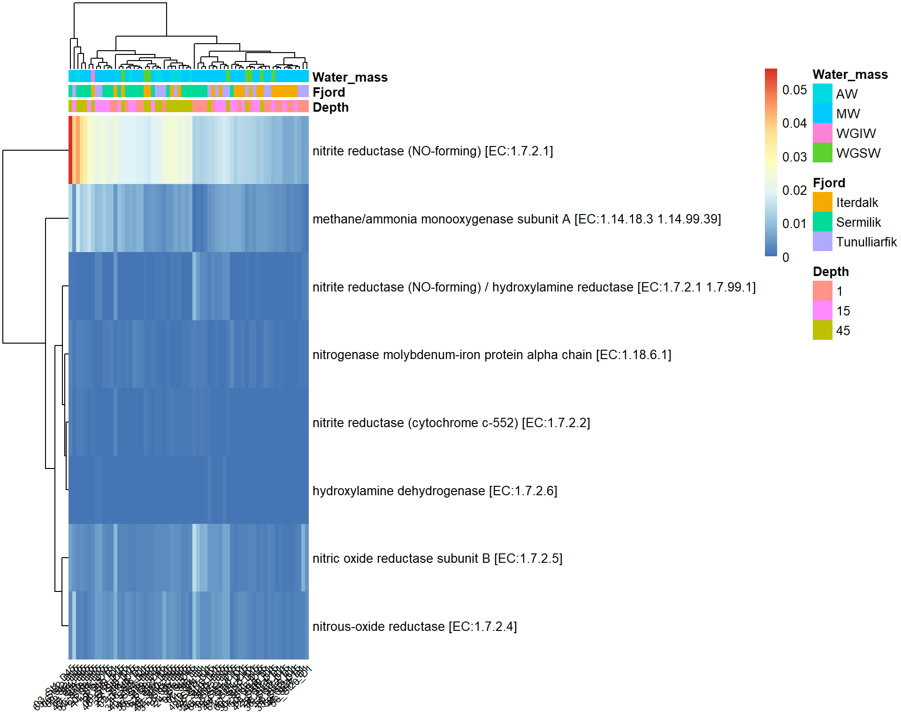

library(tidyverse)
# Load DADA2 sequence table
seqtab <- readRDS("data/16S/seqtab_nochim.rds")
# Remove controls
seqtab <- seqtab[!rownames(seqtab) %in% c("65_zymo_positive", "66_Extraction_negative"), ]
# Extract ASV sequences
asv_seqs <- colnames(seqtab)
# Make simple stable ASV IDs
asv_ids <- paste0("ASV", seq_along(asv_seqs))
# Save a lookup table
asv_map <- data.frame(
ASV = asv_ids,
Sequence = asv_seqs,
stringsAsFactors = FALSE
)
write.csv(asv_map, "ASV_map.csv", row.names = FALSE, quote = FALSE)
# Rename seqtab columns from raw sequences to ASV IDs
colnames(seqtab) <- asv_ids
# PICRUSt2 TSV input should have ASVs as rows, samples as columns
picrust_tab <- t(seqtab)
# Write abundance table
write.table(
picrust_tab,
file = "picrust2_input.tsv",
sep = "\t",
quote = FALSE,
col.names = NA
)
# Write representative sequences FASTA
con <- file("picrust2_seqs.fna", open = "w")
for (i in seq_along(asv_ids)) {
writeLines(paste0(">", asv_ids[i]), con)
writeLines(asv_seqs[i], con)
}
close(con)Function prediction - Picrust2
Running Picrust2
picrust2_pipeline.py \
-s picrust2_seqs.fna \
-i picrust2_input.tsv \
-o picrust2_out \
--threads 30 \
--stratifiedPICRUSt2 is giving you three levels of functional prediction from your 16S data:
- KO = KEGG Ortholog
- EC = Enzyme Commission number
- Pathway = usually MetaCyc pathway in PICRUSt2 by default
They are related, but they are not the same kind of annotation. PICRUSt2 predicts gene-family abundances such as KO and EC, and then uses EC-based mappings to infer higher-level pathway abundances/coverage.
Pathways: multi-step metabolic processes
A pathway is a higher-level biological process made of multiple enzymatic steps, such as amino-acid biosynthesis, glycolysis-related routes, sulfur metabolism, or degradation pathways. In PICRUSt2, pathway predictions are typically MetaCyc pathways, and they are inferred from the predicted EC content.
# If you want to analyze the abundance of KEGG pathways instead of KO within the pathway, please set `ko_to_kegg` to TRUE.
# KEGG pathways typically have more descriptive explanations.
library(readr)
library(ggpicrust2)
library(tibble)
library(tidyverse)
library(ggprism)
library(patchwork)
# Load necessary data: abundance data and metadata
pathway_abun <- read_tsv("data/16S/pathways_out/path_abun_unstrat_descrip.tsv.gz",
show_col_types = FALSE)
# keep pathway annotations separately
pathway_info <- pathway_abun %>%
select(pathway, description)
# keep only abundance columns and convert to matrix for downstream analysis
path_mat <- pathway_abun %>%
select(-description) %>%
column_to_rownames("pathway") %>%
as.matrix()
metadata <- readxl::read_xlsx("data/16S/metadata_16S.xlsx") %>%
filter(!Name %in% c("65_zymo_positive", "66_Extraction_negative")) %>%
mutate(
Name = as.character(Name),
Station = factor(Station),
Depth = factor(Depth, levels = c("1", "15", "45")),
Fjord = factor(Fjord),
Date = as.Date(as.numeric(Date), origin = "1899-12-30"),
Time = as.POSIXct(as.numeric(Time) * 86400, origin = "1970-01-01", tz = "UTC"),
Time = format(Time, "%H:%M:%S"),
Water_mass = factor(Water_mass)
)
# Normalise abundances
path_rel <- apply(path_mat, 2, function(x) x / sum(x))Ordination
library(vegan)
set.seed(42)
bc <- vegdist(t(path_rel), method = "bray")
ord <- metaMDS(bc, trace = 0)
ord_df <- as.data.frame(ord$points) %>%
rownames_to_column("Name") %>%
left_join(metadata, by = "Name")
ggplot(ord_df, aes(MDS1, MDS2, color = Depth)) +
geom_point(size = 3) +
theme_bw()
ggplot(ord_df, aes(MDS1, MDS2, color = Water_mass)) +
geom_point(size = 3) +
theme_bw()
Visualise overall pathway differences
library(pheatmap)
top_ids <- names(sort(rowMeans(path_mat), decreasing = TRUE))[1:30]
top_mat <- path_rel[top_ids, ]
top_labels <- pathway_info %>%
filter(pathway %in% top_ids) %>%
distinct(pathway, description)
# make sure label order matches matrix row order
top_labels <- top_labels %>%
slice(match(rownames(top_mat), pathway))
rownames(top_mat) <- paste(top_labels$description)
sample_annot <- metadata %>%
filter(Name %in% colnames(top_mat)) %>%
column_to_rownames("Name") %>%
select(Depth, Fjord, Water_mass)
ph <- pheatmap(
top_mat,
annotation_col = sample_annot,
fontsize_col = 5, # smaller column labels
angle_col = 45 # rotate labels
)
Below is the list of the samples that belong to the cluster on the right side of the heatmap figure above:
cl <- cutree(ph$tree_col, k = 2)
ordered_samples <- colnames(top_mat)[ph$tree_col$order]
right_samples_path <- ordered_samples[ordered_samples %in% names(cl[cl == 1])]
right_samples_path [1] "43_St15_D45" "35_St13_D1" "36_St13_D15" "42_St15_D15" "60_St21_D15"
[6] "32_St12_D1" "38_St14_D1" "29_St11_D1" "33_St12_D15" "30_St11_D15"
[11] "39_St14_D15" "41_St15_D1" "44_St16_D1" "45_St16_D15" "56_St20_D1"
[16] "59_St21_D1" "01_St1_D1" "04_St2_D1" "07_St3_D1" "10_St4_D1" These samples are almost exclusively from 1 and 15 m… (there is one sample from 45 m)
KO: gene-family / ortholog groups
A KO groups homologous genes that are considered to perform an equivalent function in the KEGG system. So a KO is usually the closest of the three outputs to a specific functional gene family. For example, a KO might correspond to a transporter subunit, an enzyme protein, or another functionally defined gene product.
# Load necessary data:
ko <- read_tsv("data/16S/KO_metagenome_out/pred_metagenome_unstrat_descrip.tsv.gz",
show_col_types = FALSE) %>% rename(KO_ID = `function`)
# keep pathway annotations separately
ko_info <- ko %>%
select(KO_ID, description)
nitrogen_kos <- c(
# Nitrogen fixation
"K02586", # nifH
"K02588", # nifD
"K02591", # nifK
# Ammonium transport / assimilation
"K03320", # amtB
"K01915", # glnA
# Nitrification: ammonia oxidation
"K10944", # amoA
"K10945", # amoB
"K10946", # amoC
"K10535", # hao
# Nitrification: nitrite oxidation
"K00370", # nxrA / narG
"K00371", # nxrB / narH
# Membrane-bound nitrate reductase (Nar)
"K00370", # narG / nxrA
"K00371", # narH / nxrB
"K00374", # narI
"K00373", # narJ
# Periplasmic nitrate reductase (Nap)
"K02567", # napA
"K02568", # napB
"K02569", # napC
"K02570", # napD
# Assimilatory nitrate/nitrite reduction
"K00372", # nasA
"K00366", # nirA
# Denitrification
"K00368", # nirK
"K15864", # nirS
"K04561", # norB
"K02305", # norC
"K00376", # nosZ
# DNRA
"K03385", # nrfA
"K15876", # nrfH
"K00362", # nirB
"K00363", # nirD
# Anammox
"K20932", # hzsA
"K20933", # hzsB
"K20934", # hzsC
"K20935" # hdh
) |> unique()
ko_n <- ko %>%
mutate(KO = sub("ko:", "", KO_ID)) %>%
filter(KO %in% nitrogen_kos)
nitrogen_kos_core <- c(
"K02586", # nifH
"K10944", # amoA
"K10535", # hao
"K00368", # nirK
"K15864", # nirS
"K04561", # norB
"K00376", # nosZ
"K03385", # nrfA
"K20935" # hdh
)
ko_n_core <- ko %>%
mutate(KO = sub("ko:", "", KO_ID)) %>%
filter(KO %in% nitrogen_kos_core)
# keep only abundance columns and convert to matrix for downstream analysis
ko_n_mat <- ko_n %>%
select(-description, -KO) %>%
column_to_rownames("KO_ID") %>%
as.matrix()
ko_n_core_mat <- ko_n_core %>%
select(-description, -KO) %>%
column_to_rownames("KO_ID") %>%
as.matrix()
# Normalise abundances
ko_rel <- apply(ko_n_mat, 2, function(x) x / sum(x))Visualise overall KO differences
top_ids <- names(sort(rowMeans(ko_n_mat), decreasing = TRUE))
top_mat <- ko_rel[top_ids, ]
top_labels <- ko_info %>%
filter(KO_ID %in% top_ids) %>%
distinct(KO_ID, description)
# make sure label order matches matrix row order
top_labels <- top_labels %>%
slice(match(rownames(top_mat), KO_ID))
rownames(top_mat) <- paste(top_labels$description)
sample_annot <- metadata %>%
filter(Name %in% colnames(top_mat)) %>%
column_to_rownames("Name") %>%
select(Depth, Fjord, Water_mass)
ph <- pheatmap(
top_mat,
annotation_col = sample_annot,
fontsize_col = 8, # smaller column labels
angle_col = 45 # rotate labels
)
Below is the list of the samples that belong to the cluster on the right side of the heatmap figure above:
cl <- cutree(ph$tree_col, k = 2)
ordered_samples <- colnames(top_mat)[ph$tree_col$order]
right_samples_ko <- ordered_samples[ordered_samples %in% names(cl[cl == 1])]
right_samples_ko [1] "36_St13_D15" "42_St15_D15" "35_St13_D1" "60_St21_D15" "01_St1_D1"
[6] "32_St12_D1" "38_St14_D1" "50_St18_D1" "53_St19_D1" "05_St2_D15"
[11] "16_St6_D1" "34_St12_D45" "02_St1_D15" "13_St5_D1" "43_St15_D45"
[16] "30_St11_D15" "39_St14_D15" "44_St16_D1" "04_St2_D1" "07_St3_D1"
[21] "10_St4_D1" "29_St11_D1" "56_St20_D1" "45_St16_D15" "41_St15_D1"
[26] "33_St12_D15" "59_St21_D1" Let’s see how many of these samples clustered in the right side of this plot are the same as those also cluster at the right of the heatmap of pathways:
common_samples <- intersect(right_samples_ko, right_samples_path)
common_samples [1] "36_St13_D15" "42_St15_D15" "35_St13_D1" "60_St21_D15" "01_St1_D1"
[6] "32_St12_D1" "38_St14_D1" "43_St15_D45" "30_St11_D15" "39_St14_D15"
[11] "44_St16_D1" "04_St2_D1" "07_St3_D1" "10_St4_D1" "29_St11_D1"
[16] "56_St20_D1" "45_St16_D15" "41_St15_D1" "33_St12_D15" "59_St21_D1" It seems that all the 20 samples from the right-cluster of the pathway heatmap are again present here. What do the have in common? Likely their taxonomical diversity will be similar. I could group a variable to separate these from the rest of the samples and look at their spatial distribution…
top_ids <- names(sort(rowMeans(ko_n_core_mat), decreasing = TRUE))
top_mat <- ko_rel[top_ids, ]
top_labels <- ko_info %>%
filter(KO_ID %in% top_ids) %>%
distinct(KO_ID, description)
# make sure label order matches matrix row order
top_labels <- top_labels %>%
slice(match(rownames(top_mat), KO_ID))
rownames(top_mat) <- paste(top_labels$description)
sample_annot <- metadata %>%
filter(Name %in% colnames(top_mat)) %>%
column_to_rownames("Name") %>%
select(Depth, Fjord, Water_mass)
ph <- pheatmap(
top_mat,
annotation_col = sample_annot,
fontsize_col = 8, # smaller column labels
angle_col = 45 # rotate labels
)
Using ggpicrust2
ggpicrust2 was built specifically for PICRUSt2-derived functional profiles and provides a clean way to do differential abundance testing, annotation, and visualization of KO / EC / pathway outputs in R.
# Run ggpicrust2 with input file path
results_file_input <- ggpicrust2(file = abundance_file,
metadata = metadata,
group = "your_group_column", # For example dataset, group = "Environment"
pathway = "KO",
daa_method = "LinDA",
ko_to_kegg = TRUE,
order = "pathway_class",
p_values_bar = TRUE,
x_lab = "pathway_name")
# Run ggpicrust2 with imported data.frame
abundance_data <- read_delim(abundance_file, delim = "\t", col_names = TRUE, trim_ws = TRUE)
# Run ggpicrust2 with input data
results_data_input <- ggpicrust2(data = abundance_data,
metadata = metadata,
group = "your_group_column", # For example dataset, group = "Environment"
pathway = "KO",
daa_method = "LinDA",
ko_to_kegg = TRUE,
order = "pathway_class",
p_values_bar = TRUE,
x_lab = "pathway_name")
# Access the plot and results dataframe for the first DA method
example_plot <- results_file_input[[1]]$plot
example_results <- results_file_input[[1]]$results
# Use the example data in ggpicrust2 package
data(ko_abundance)
data(metadata)
results_file_input <- ggpicrust2(data = ko_abundance,
metadata = metadata,
group = "Environment",
pathway = "KO",
daa_method = "LinDA",
ko_to_kegg = TRUE,
order = "pathway_class",
p_values_bar = TRUE,
x_lab = "pathway_name")
# Analyze the EC or MetaCyc pathway
data(metacyc_abundance)
results_file_input <- ggpicrust2(data = metacyc_abundance,
metadata = metadata,
group = "Environment",
pathway = "MetaCyc",
daa_method = "LinDA",
ko_to_kegg = FALSE,
order = "group",
p_values_bar = TRUE,
x_lab = "description")
results_file_input[[1]]$plot
results_file_input[[1]]$results